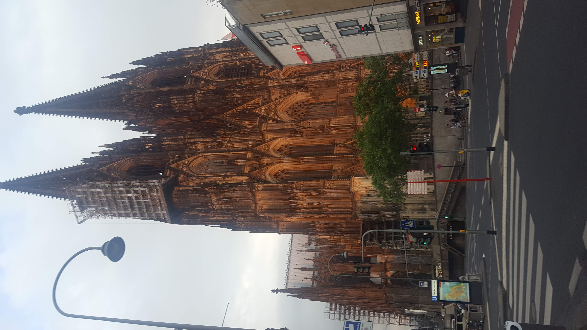
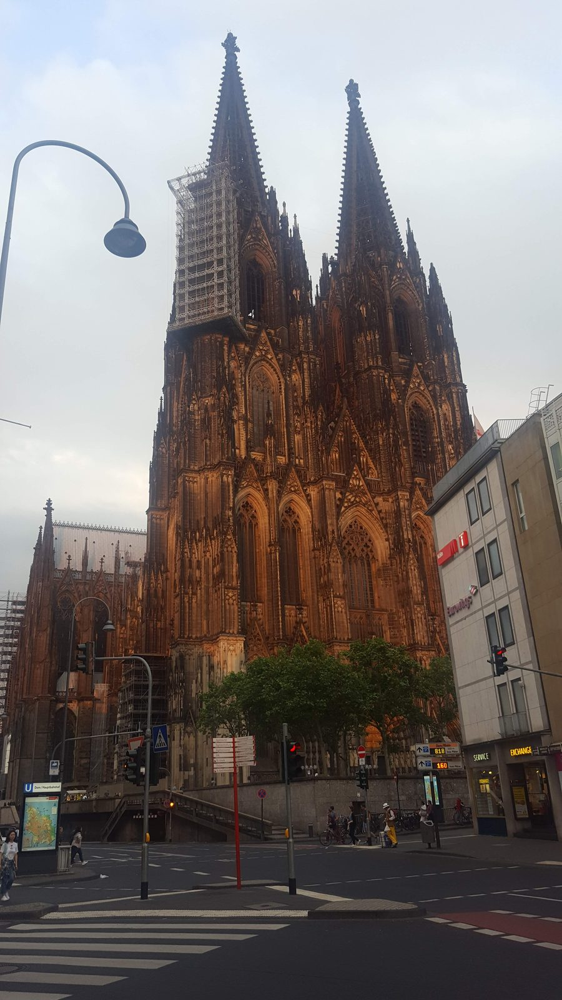
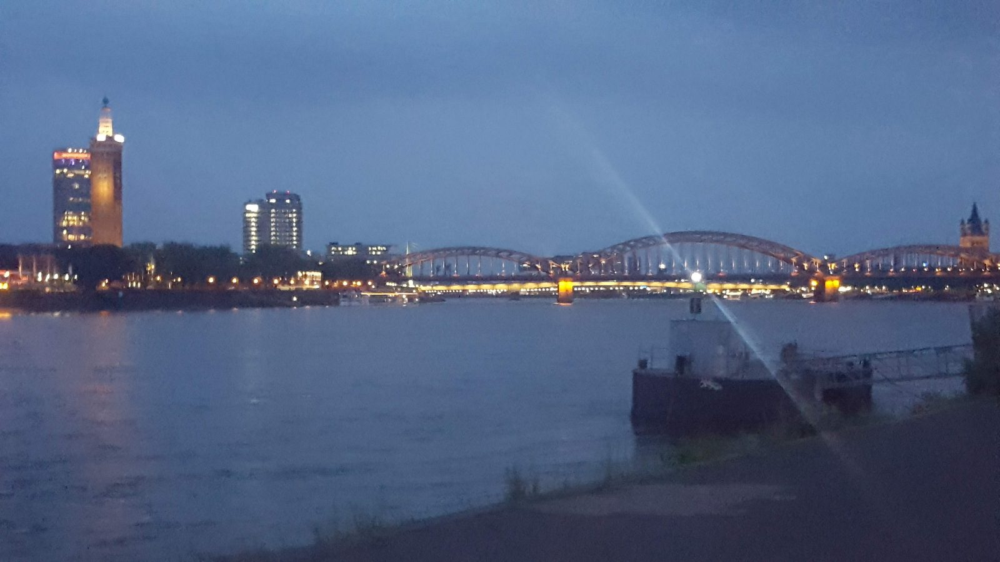
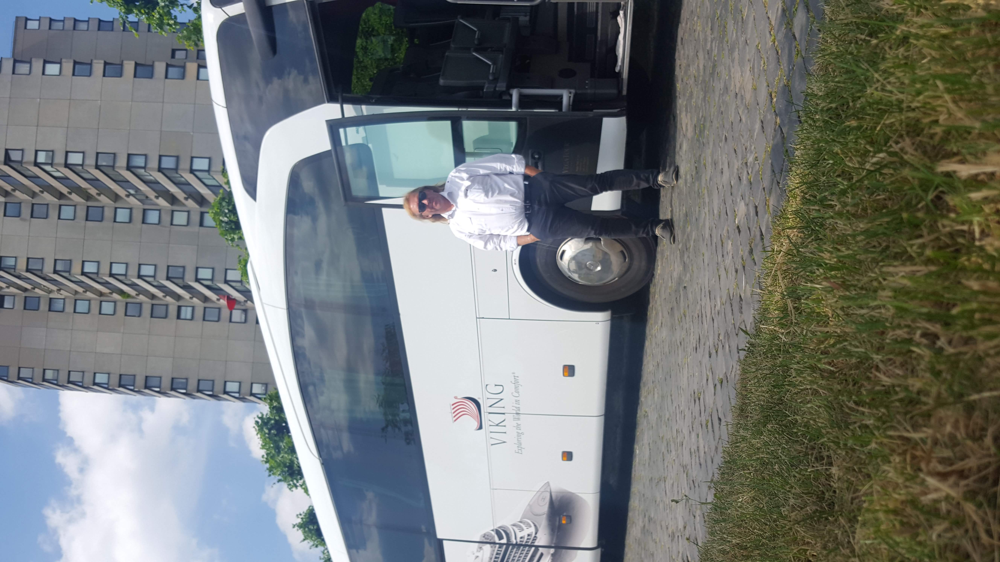
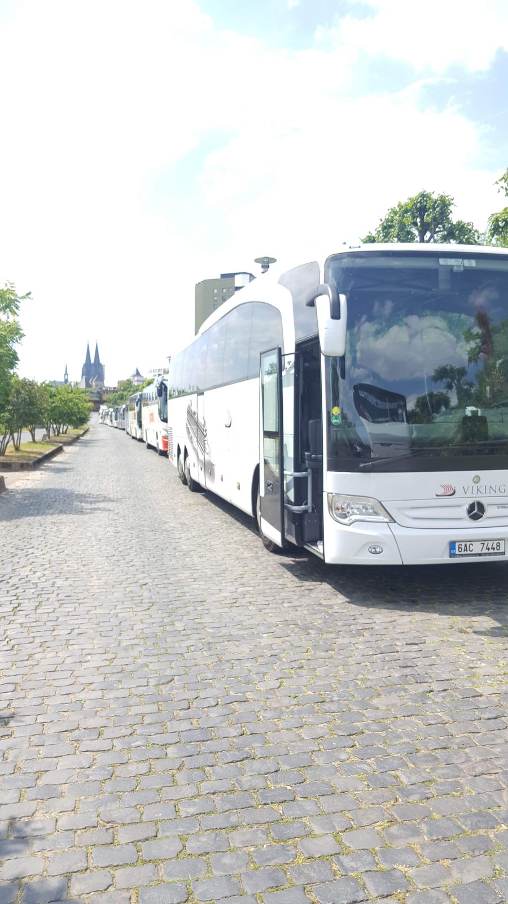
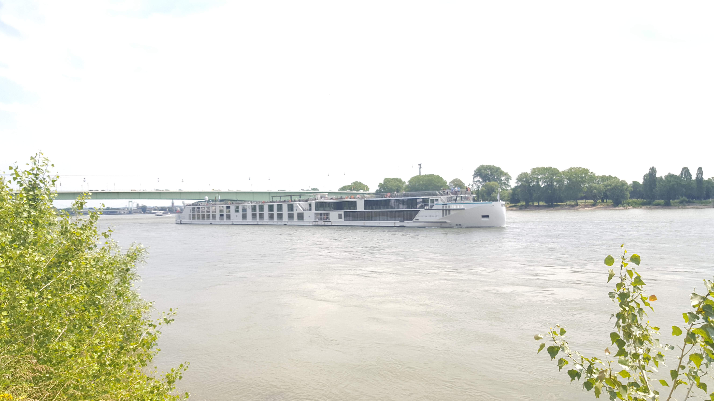
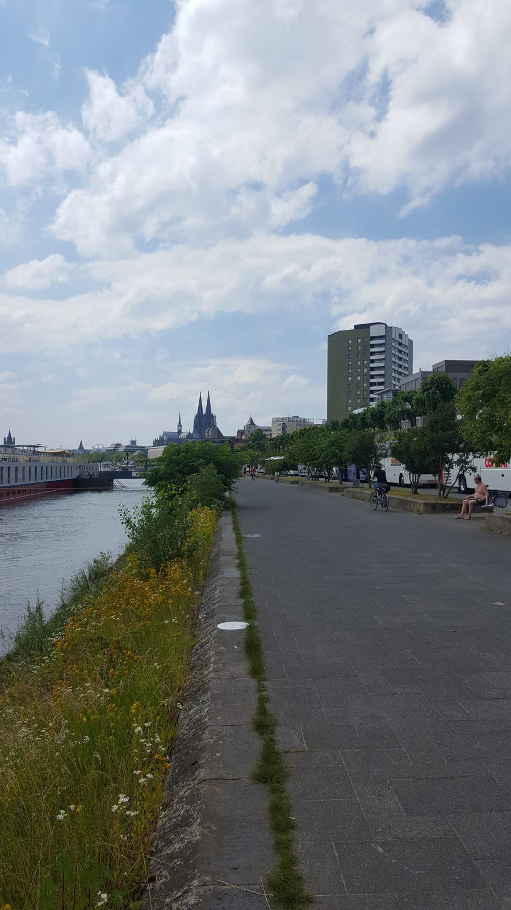
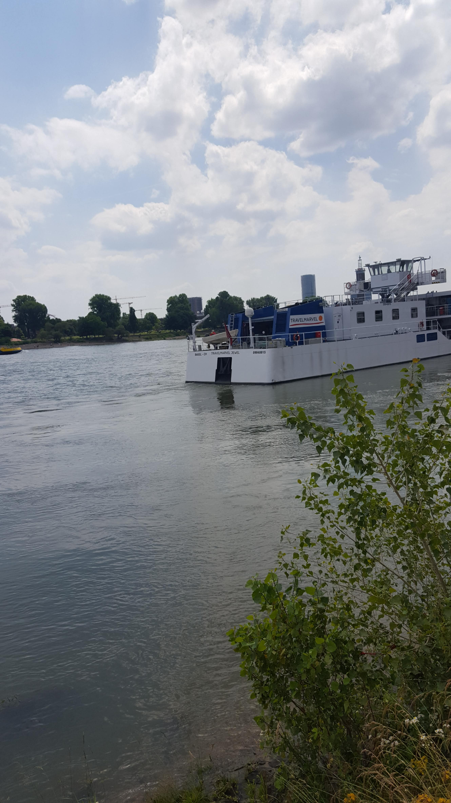
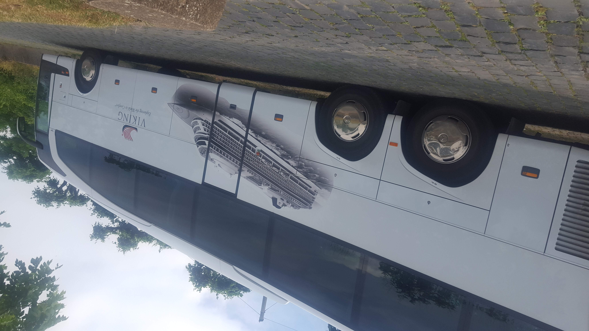

Čtyři velmi různé tváře jednoho státu — moderní hlavní město,
barokní Sasko, místo paměti i bývalá vojenská základna proměněná
v uměleckou kolonii. 2018–2019.
Pro koho je tato stránka: kdo má rád Německo bez klišé "Berlín = pivo, Mnichov = Oktoberfest". Šest měst a míst, kde jsem byl s autobusem i osobně.
Co tady najdeš: Berlín, Drážďany, Wolfsburg (auta), Baden-Baden (lázně), Dachau (památník) a soukromé místo Raketenstation Hombroich.
Pár slov
Německo je země, kterou jako řidič procestuju několikrát do roka,
ale málokdy se zastavím. Tahle stránka je o místech, kde jsem se
zastavil naschvál — v Berlíně na pár dní, v Drážďanech v zimě
před Vánocemi, v Dachau za mlhavého dubnového rána a v Hombroichu
mezi sochami a betonovými bunkry, kde dnes místo raket stojí
umělecká díla.
Dachau je samostatná kapitola. Návštěvu památníku
nelze popsat fotkou ani textem — jen tichem mezi bývalými
strážními věžemi a panely s příběhy. Patří to mezi věci,
které si člověk pamatuje napořád.
🏛 Berlín
Hlavní město. Brandenburská brána, Říšský sněm, zbytky Berlínské zdi, Memorial obětí holokaustu, Museumsinsel — město plné kontrastů, kde minulost a současnost stojí vedle sebe. (20 fotek · červen 2019)
Budova Reichstagu v Berlíně s německými vlajkami (červen 2019)
Braniborská brána v Berlíně s davy turistů (červen 2019)
Checkpoint Charlie na Friedrichstraße v Berlíně (červen 2019)
Místo bývalého přechodu Checkpoint Charlie v Berlíně (červen 2019)
Křižovatka Friedrichstraße u Checkpoint Charlie v Berlíně (červen 2019)
Ruina Pamětního kostela císaře Viléma v Berlíně (červen 2019)
Ruina věže Pamětního kostela císaře Viléma v Berlíně (červen 2019)
Mural Bratrský polibek na East Side Gallery v Berlíně (červen 2019)
Turisté před muralem Bratrský polibek na East Side Gallery v Berlíně (červen 2019)
Detail muralu Bratrský polibek na East Side Gallery v Berlíně (červen 2019)
Malba s nápisem Berlin na East Side Gallery (červen 2019)
🏰 Postupim (červen 2019)
Hrázděné průčelí zámku Cecilienhof v Postupimi (červen 2019)
Zámek Cecilienhof v Postupimi s květinovým záhonem ve tvaru rudé hvězdy (červen 2019)
⛪ Drážďany
Frauenkirche znovupostavený z trosek, Zwinger, Semperoper. Saská metropole, kterou stojí za to vidět v každém ročním období. (6 fotek · prosinec 2018)
Vánoční trh Dresdner Striezelmarkt v Drážďanech (prosinec 2018)
Semperova opera v Drážďanech (červen 2019)
Theaterplatz v Drážďanech s Hofkirche a zámkem (červen 2019)
Semperova opera a jezdecká socha na Theaterplatz v Drážďanech (červen 2019)
Autobus před Semperovou operou v Drážďanech (červen 2019)
🚗 Wolfsburg
Sídlo Volkswagenu a domov Autostadtu — areál tematických pavilonů automobilek (VW, Audi, Porsche, Lamborghini, ŠKODA, Bentley) přímo u továrny. Pro každého automobilového nadšence pojem. (10 fotek · červenec 2019)
Komíny elektrárny Volkswagen ve Wolfsburgu (červenec 2019)
Vědecké centrum Phaeno ve Wolfsburgu (červenec 2019)
Elektrárna Volkswagen a železniční trať ve Wolfsburgu (červenec 2019)
Krytá lávka s pohyblivým chodníkem u Autostadtu ve Wolfsburgu (červenec 2019)
Mittellandkanal a komíny elektrárny Volkswagen ve Wolfsburgu (červenec 2019)
♨ Baden-Baden
Lázeňské město na okraji Schwarzwaldu. Kasino z 19. století, římské termální prameny, rozsáhlé parky a klasická wilhelmovská architektura. (6 fotek · červen 2019)
Bílá socha koně u Kurhausu v Baden-Badenu (červen 2019)
Bílá socha koně s nápisem Baden-Baden u kolonády Kurhausu (červen 2019)
🕯 Dachau — památník
Bývalý koncentrační tábor, dnes památník a místo paměti. Návštěva, která se nedá popsat — jen prožít. Cesta, kterou by měl absolvovat každý, komu nestačí jen číst o historii. (13 fotek · duben 2019)
Shromažďovací prostranství v památníku KZ Dachau (duben 2019)
Pohled přes shromažďovací prostranství v památníku KZ Dachau (duben 2019)
Krematorní pece v památníku KZ Dachau (duben 2019)
Detail krematorních pecí v památníku KZ Dachau (duben 2019)
Brána s nápisem Arbeit macht frei v památníku KZ Dachau (duben 2019)
Bývalá raketová stanice NATO přeměněná na uměleckou kolonii a muzeum. Betonové bunkry mezi loukami, sochy, galerie a moderní pavilony — neobvyklý kontrast vojenské minulosti a současného umění. (8 fotek · 2019)
Betonová stavba v areálu Raketenstation Hombroich (červenec 2019)
Betonový objekt s kupolí v areálu Raketenstation Hombroich (červenec 2019)
Betonové nádvoří s ocelovými objekty v areálu Raketenstation Hombroich (červenec 2019)
Betonová plocha a zarostlý bunkr v areálu Raketenstation Hombroich (červenec 2019)
Kruhová betonová stavba v areálu Raketenstation Hombroich (červenec 2019)
Cedule u vstupu do areálu Raketenstation Hombroich (červenec 2019)
🏰 Köln / Kolín nad Rýnem
Pracovní zastávky v Kolíně — Dom (katedrála), Hohenzollernbrücke a procházky po nábřeží Rýna. (9 fotek · 2019)

Kolínský dóm večer (červen 2019)

Kolínský dóm ve večerním světle (červen 2019)







„Některá místa nejsou tam proto, aby se líbila — ale aby
se nezapomnělo."